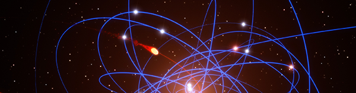

Деплой сайта
Решение задачи по связке репозитория сайта с его продакшн сервером.
Движение объекта по произвольной траектории на SVG
Статья о том, как реализовать движние объекта по произвольной траектории.
Эффект
Статья о том, как реализовать движние объекта по произвольной траектории.